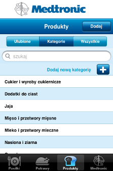
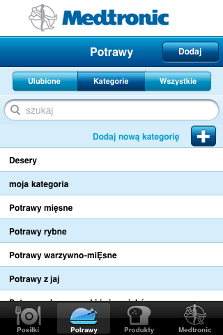
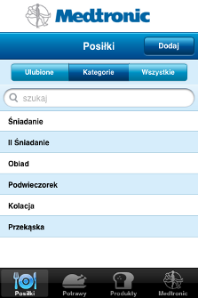

Aplikacja umożliwia katalogowanie produktów, potraw i posiłków za pomocą kategorii i podkategorii.
Kategorie produktów są ułożone hierarchicznie. Użytkownik ma możliwość dodawania zarówno kategorii, jak i podkategorii. Jeden produkt może należeć do jednej kategorii/podkategorii.

Kategorie potraw nie mają podkategorii. Użytkownik ma możliwość dodawania nowych kategorii. Możliwe jest usuwanie tych kategorii, które zostały dodane przez użytkownika i nie zawierają żadnych potraw.Jedna potrawa może należeć do wielu kategorii.

Kategorie posiłków są z góry zdefiniowane i ułożone w porządku zgodnym z rytmem dnia.
